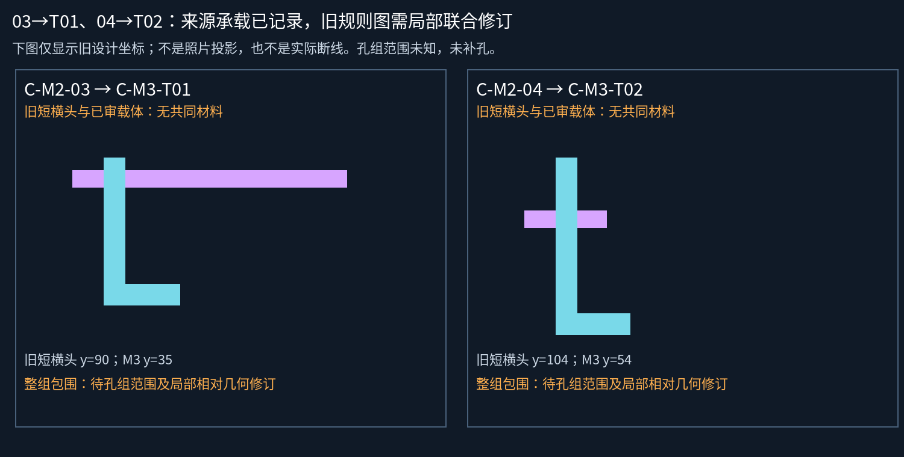

用户原文：我个人判断03接T01,04接T02。记录为人工视觉判断；未追加孔数、照片配准或设计几何批准。
| M2 | 孔层 | M3 | 旧规则图落点 |
|---|---|---|---|
| C-M2-03 | V2，已审 | C-M3-T01，人工判断 | 短横头无共同材料 |
| C-M2-04 | V2，已审 | C-M3-T02，人工判断 | 短横头无共同材料 |

这是旧规则模型与新承载关系的冲突，不是实际断线。04靠近的是M3模型显示范围边界，不能当作物理终点。整组包围尚未评估，不用代理孔凑通过。
当前工作模型仍30金属、5已审接口、34设计候选孔；来源层累计7条承载记录，新两条尚未补入几何。不重问两项身份/承载。下一步只做局部联合修订和整组来源范围检查。README/site/gh-pages保持。